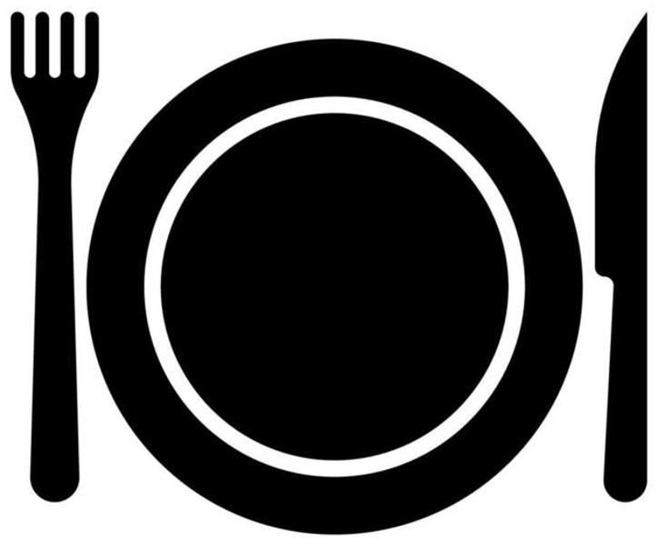
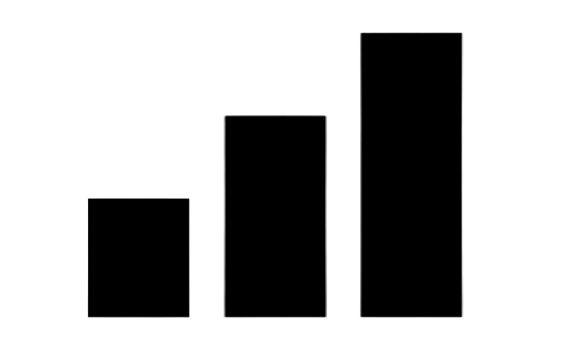
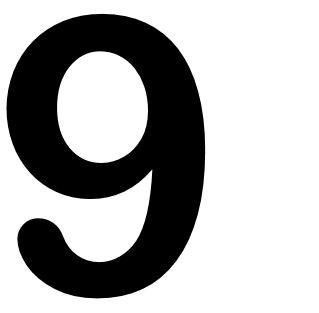

Pizza
En Taste of me queremos que aprendas recetas fáciles que te permitan preparar platos exquisitos y únicos, como esta pizzas casera.

| 1h 30min |  Plato principal |  Dificultad baja |
|---|
Instrucciones
En general, unos 30 gramos de levadura fresca equivalen a unos 10 gramos de levadura seca, tenlo en cuenta por si quieres usar una levadura diferente a la de esta receta de pizza italiana.
Antes de que la preparación se enfríe, añade en un bol amplio la harina de fuerza y la sal, acomódalas en forma de volcán. Vierte la mezcla anterior en el centro.
Ahora es cuando tienes que empezar a amasar bien hasta que notes que la masa de pizza casera deja de pegarse en tus manos y puedes manejarla sin problemas.
Cuando tengas la masa de pizza esponjosa lista, deberás darle forma de tubo largo y cortarla en 4 particiones. Después, haz una bola con cada partición y tápalas con un trapo limpio y seco. Deberás dejarlas reposar durante 45 minutos. Verás que, poco a poco, empiezan a elevarse hasta duplicar su volumen. Cada bola de masa te servirá para hacer una pizza casera normal.
Pasado el tiempo correspondiente, espolvorea un poco de harina sobre una mesa para preparar la pizza casera, coge una de las bolas y colócala sobre ella. Ahora deberás extenderla con tus manos estirando desde el centro hacia los costados, dándole forma circular. Si dispones de rodillo también puedes utilizarlo para que quede más fina la masa. Una vez estirada, ya puedes añadir la salsa para pizza casera y los ingredientes para pizza que prefieras. Puedes usar esta deliciosa receta casera de salsa de tomate y cebolla para pizza.
Una vez hayas escogido los ingredientes y tengas tu masa de pizza casera terminada, deberás precalentar el horno a temperatura máxima durante unos 20 minutos.
 Pasado el tiempo, introduce la preparación pizza casera y hornéala durante 10 minutos aproximadamente. Deberás vigilarla porque el tiempo final variará en función del tipo de horno y la intensidad que tenga. ¡Listo, tu pizza casera al horno estará para chuparse los dedos!